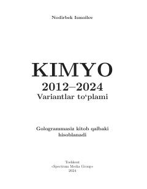

K2Kimyo fanidan 2012-2024-yillar test variantlari va masalalar to'plami.
Ushbu qo'llanma 2012-2024-yillardagi kimyo fanidan test variantlari va masalalar yechimlarini o'z ichiga oladi. Kitob abituriyentlar va o'quvchilarga imtihonlarga tayyorgarlik ko'rishda amaliy yordam beradi.